Code
library(xts)
library(lmtest)
library(tidyverse)
library(urca)
library(forecast)When creating the project, We fixed the versions of R studio and packages to ensure that the content can be reproduced.
library(xts)
library(lmtest)
library(tidyverse)
library(urca)
library(forecast)The article first checks the description of the data.
We selected the same dataset (Netflix stock price from 2015 to 2020) according to the dataset description in the article.
Here prove that the dataset we use is consistent with the article.
data <- read.csv("NFLX.csv")
data$Date <- as.Date(data$Date, format = "%Y-%m-%d")
str(data)'data.frame': 1260 obs. of 7 variables:
$ Date : Date, format: "2015-04-07" "2015-04-08" ...
$ Open : num 60.5 61.2 63 64.4 67.2 ...
$ High : num 60.8 63.1 63.1 65 69.3 ...
$ Low : num 60 61.2 62.1 63.9 67.1 ...
$ Close : num 60.5 63 62.8 64.9 67.8 ...
$ Adj.Close: num 60.5 63 62.8 64.9 67.8 ...
$ Volume : int 9977100 22327900 13455400 22367100 44436700 28641900 42528500 104500900 58306500 30766400 ...Since we used the same dataset as the article, the trend chart is perfectly reproduced.
data <- xts(data[, -1],order.by = data$Date,frequency = 12)
# Extract and work with Adjusted Close prices
Adj.Close <- data$Adj.Close
# Plot original Adjusted Close prices
plot(Adj.Close, main = "NFLX Adjusted Close Prices", ylab = "Price", xlab = "Date", col = "sky blue")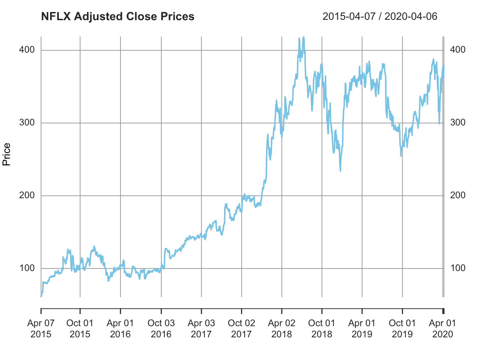
We added 7-day, 30-day and 365-day Moving Average respectively.
The trend chart is also perfectly reproduced here.
# Calculate weekly moving average (K=7)
weekly_ma <- rollmean(Adj.Close, k = 7, fill = NA)
# Calculate monthly moving average (K=30, approximating 1 month)
monthly_ma <- rollmean(Adj.Close, k = 30, fill = NA)
# Calculate yearly moving average (K=365, approximating 1 year)
yearly_ma <- rollmean(Adj.Close, k = 365, fill = NA)# Plot all moving averages
plot(Adj.Close, main = "NFLX Adjusted Close Prices with Moving Averages", ylab = "Price", xlab = "Date", col = "red")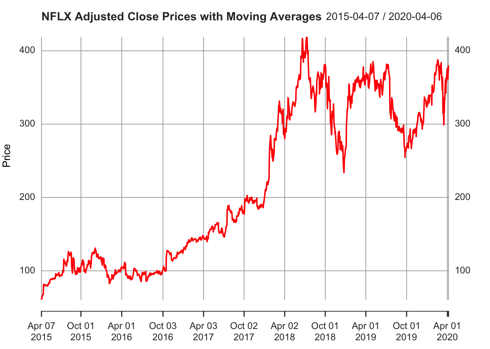
lines(weekly_ma, col = "green", lwd = 2)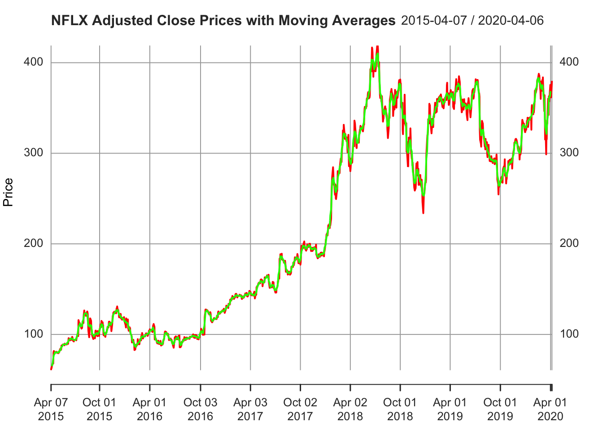
lines(monthly_ma, col = "sky blue", lwd = 2)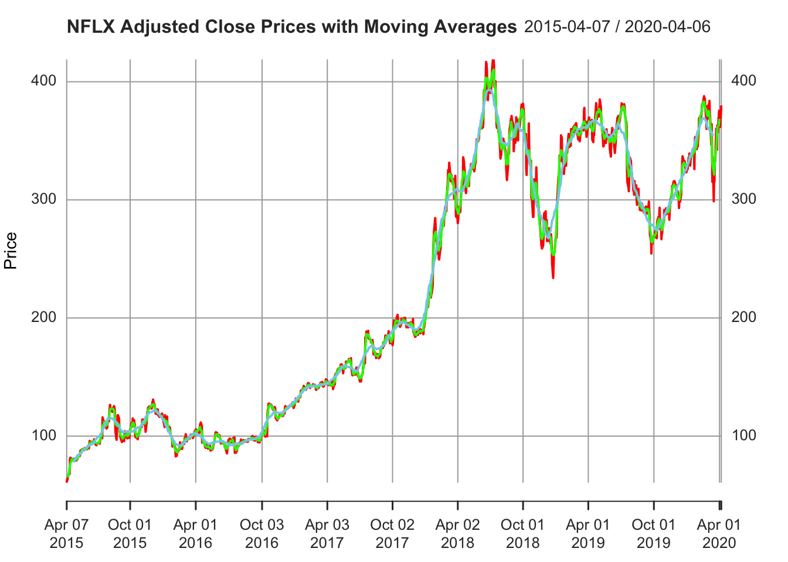
lines(yearly_ma, col = "purple", lwd = 2)
legend("topright", legend = c("Weekly MA", "Monthly MA", "Yearly MA"), col = c("green", "sky blue", "purple"), lwd = 2)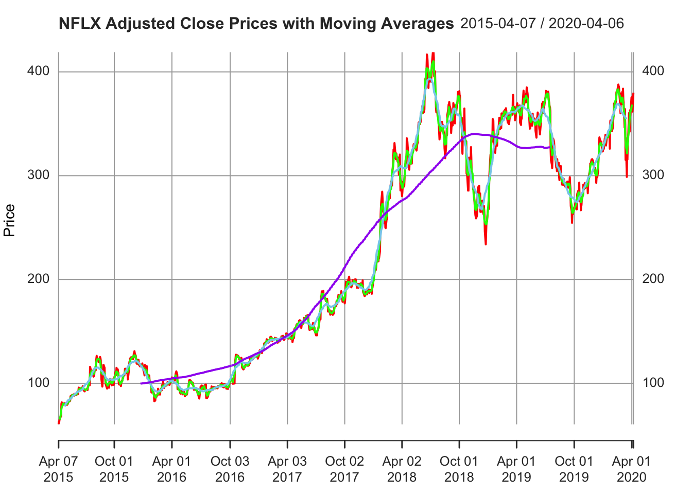
According to the requirements of the article, here we have done a decomposition of the time series data, in which seasonality, trends, data and reminders are identified, and seasonality is removed to improve the stationarity of the data.
It is worth mentioning that our results here are not consistent with the original article.
We found the reason when we couldn’t reproduce 100% later. We specifically retain this difference, believing that it can reflect the problems that may be encountered in real reproduction operations.
This is because the original article chose to use the 7-day moving average as the main data, while we directly chose the original data.
# Decomposition of the time series
Adj.Close_ts <- as.ts(Adj.Close)
Adj.Close_ts <- ts(coredata(Adj.Close), frequency = 12)
decomp <- decompose(Adj.Close_ts)# Plotting decompose results
par(mfrow = c(4, 1), mar = c(4, 4, 1, 1)) # Setting up the plotting area
plot(decomp$x, main = "Original Data", ylab = "Data")
plot(decomp$seasonal, main = "Seasonal Component", ylab = "Seasonal")
plot(decomp$trend, main = "Trend Component", ylab = "Trend")
plot(decomp$random, main = "Random Component", ylab = "Remainder")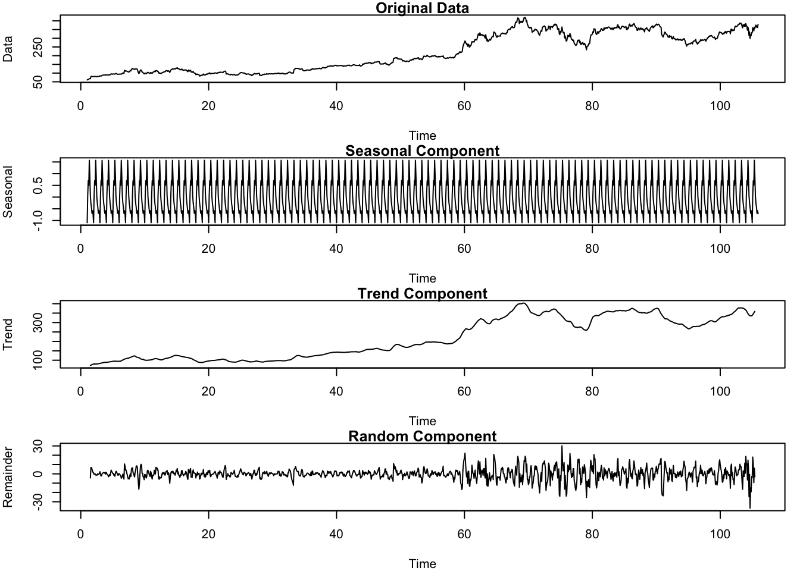
par(mfrow = c(1, 1), mar = c(1, 1, 1, 1)) Here we recreate the stationarity test from the paper, first showing that the data are non-stationary before differencing.
# Set up the plotting area to have 2 rows and 1 column
par(mfrow = c(2, 1))
# Set smaller margins
par(mar = c(5, 5, 2, 2)) # c(bottom, left, top, right)
# Plot your ACF and PACF with adjusted margins
acf(Adj.Close, lag.max = 60, lwd = 5, col = "grey", na.action = na.pass)
pacf(Adj.Close,lag.max = 36, lwd = 5, col = "black",na.action = na.pass)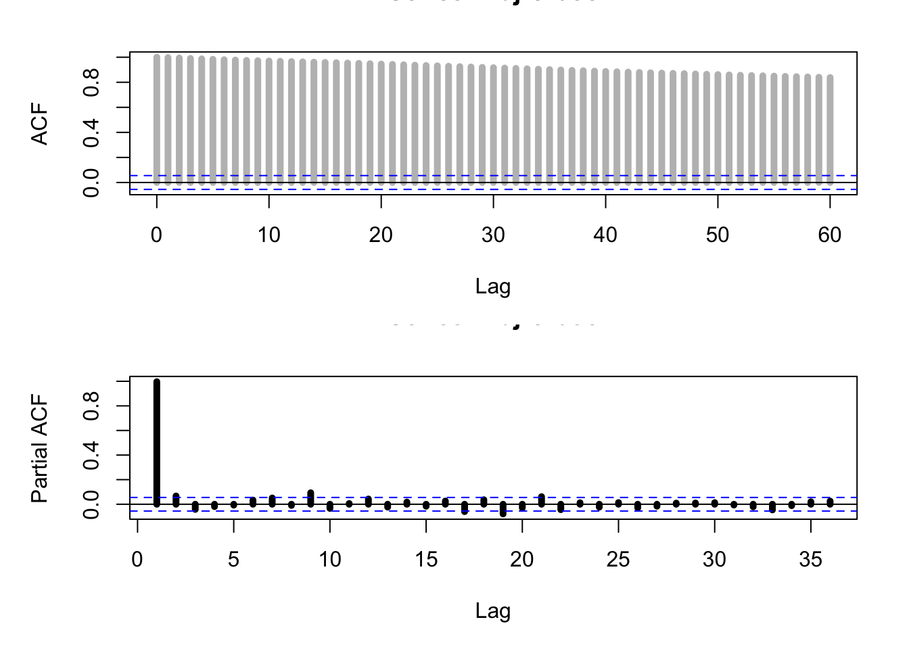
# Reset the plotting area to the default
par(mfrow = c(1, 1)) From the ADF test results, the p-value is equal to 0.3651, which further proves that the time series is not stationary.
#The Augmented Dickey-Fuller (ADF) test for unit roots in a time series.
adf_test <- ur.df(Adj.Close, type = "drift", selectlags = "AIC")
summary(adf_test)
###############################################
# Augmented Dickey-Fuller Test Unit Root Test #
###############################################
Test regression drift
Call:
lm(formula = z.diff ~ z.lag.1 + 1 + z.diff.lag)
Residuals:
Min 1Q Median 3Q Max
-37.540 -2.260 -0.301 2.317 27.865
Coefficients:
Estimate Std. Error t value Pr(>|t|)
(Intercept) 0.592629 0.398307 1.488 0.1370
z.lag.1 -0.001493 0.001647 -0.906 0.3651
z.diff.lag -0.072706 0.028243 -2.574 0.0102 *
---
Signif. codes: 0 '***' 0.001 '**' 0.01 '*' 0.05 '.' 0.1 ' ' 1
Residual standard error: 6.284 on 1255 degrees of freedom
Multiple R-squared: 0.006004, Adjusted R-squared: 0.00442
F-statistic: 3.79 on 2 and 1255 DF, p-value: 0.02285
Value of test-statistic is: -0.906 1.5655
Critical values for test statistics:
1pct 5pct 10pct
tau2 -3.43 -2.86 -2.57
phi1 6.43 4.59 3.78Here we have differentiated the data and obtained a stationary time series.
# Difference the data and remove NAs
dadj <- na.exclude(diff.xts(Adj.Close))
# Set up the plotting area to have 2 rows and 1 column
par(mfrow = c(2, 1))
par(mar = c(5, 5, 2, 2)) # c(bottom, left, top, right)
# Plot the ACF
acf(dadj,lag.max = 60, lwd = 5,col = "dark green",na.action = na.pass)
# Plot the PACF
pacf(dadj,lag.max = 36,lwd = 5, col = "dark green",na.action = na.pass)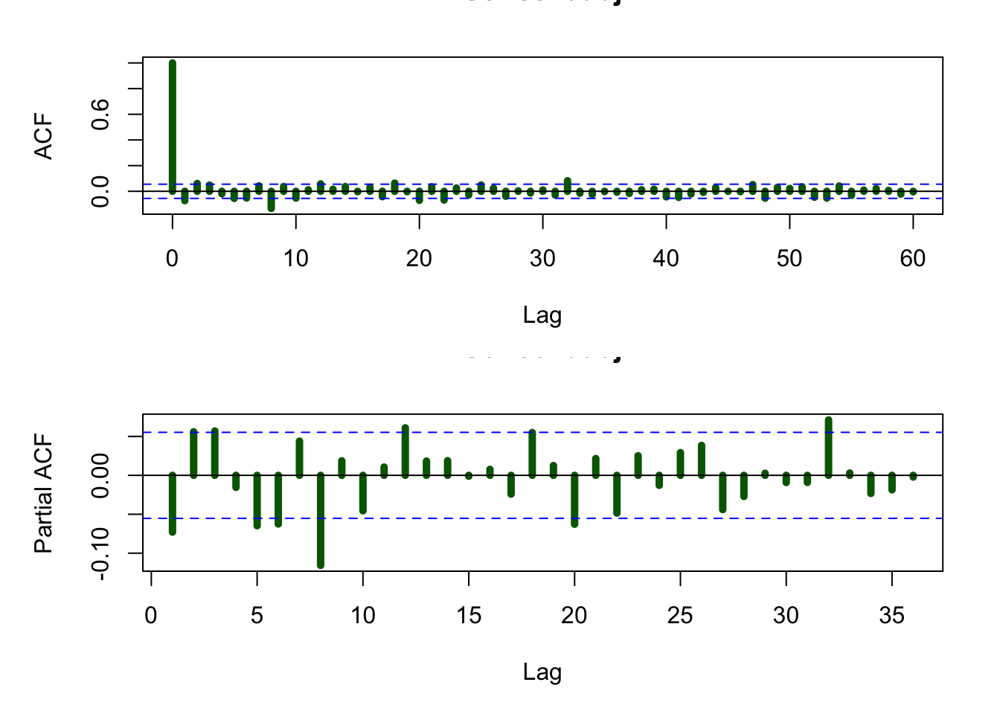
# Reset the plotting area to the default
par(mfrow = c(1, 1)) The p-value is less than 0.05, so we can reject the null hypothesis and prove that the time series is stationary.
The results of the stationarity test are consistent with the original article. They are both non-stationary before differencing and stationary after differencing.
# Perform the ADF test on the differenced data
adf_test_dadj <- ur.df(dadj, type = "drift", selectlags = "AIC")
summary(adf_test_dadj)
###############################################
# Augmented Dickey-Fuller Test Unit Root Test #
###############################################
Test regression drift
Call:
lm(formula = z.diff ~ z.lag.1 + 1 + z.diff.lag)
Residuals:
Min 1Q Median 3Q Max
-37.697 -2.221 -0.218 2.351 27.621
Coefficients:
Estimate Std. Error t value Pr(>|t|)
(Intercept) 0.25489 0.17738 1.437 0.1510
z.lag.1 -1.01287 0.04139 -24.470 <2e-16 ***
z.diff.lag -0.05655 0.02830 -1.998 0.0459 *
---
Signif. codes: 0 '***' 0.001 '**' 0.01 '*' 0.05 '.' 0.1 ' ' 1
Residual standard error: 6.279 on 1254 degrees of freedom
Multiple R-squared: 0.5365, Adjusted R-squared: 0.5358
F-statistic: 725.9 on 2 and 1254 DF, p-value: < 2.2e-16
Value of test-statistic is: -24.4705 299.4042
Critical values for test statistics:
1pct 5pct 10pct
tau2 -3.43 -2.86 -2.57
phi1 6.43 4.59 3.78We generated an ARIMA model (2, 1, 2) using auto arima.
# Automatically fit ARIMA model
auto.arima(Adj.Close, seasonal = TRUE)Series: Adj.Close
ARIMA(2,1,2) with drift
Coefficients:
ar1 ar2 ma1 ma2 drift
0.2664 -0.5168 -0.3399 0.6094 0.2539
s.e. 0.1885 0.1432 0.1756 0.1328 0.1786
sigma^2 = 39.13: log likelihood = -4092.27
AIC=8196.53 AICc=8196.6 BIC=8227.36# Subset data up to a specific date
cdata.shortx1 <- Adj.Close["/20171007", ]
# Fit ARIMA(2, 1, 2) model
arima212 <- Arima(cdata.shortx1,order = c(2, 1, 2))
# Coefficients and summary
summary(arima212)Series: cdata.shortx1
ARIMA(2,1,2)
Coefficients:
ar1 ar2 ma1 ma2
0.0707 0.8651 -0.0662 -0.8748
s.e. 0.9926 1.0997 1.0675 1.1503
sigma^2 = 9.276: log likelihood = -1598.63
AIC=3207.26 AICc=3207.36 BIC=3229.51
Training set error measures:
ME RMSE MAE MPE MAPE MASE
Training set 0.2331183 3.033594 1.969616 0.1635537 1.720336 0.9974815
ACF1
Training set 0.01518222It shows some significant peaks in the ACF and PACF, and exceeds the limits.
# Set up the plotting area to have 3 rows and 1 column
par(mfrow = c(3, 1))
par(mar = c(5, 5, 2, 2)) # c(bottom, left, top, right)
# Plot residuals
plot(resid(arima212))
# ACF and PACF of residuals
acf(resid(arima212),lag.max = 60, ylim = c(-0.1, 0.1), main = "ACF", lwd = 2, col = "dark green",na.action = na.pass)
pacf(resid(arima212),lag.max = 36, main = "PACF", lwd = 2, col = "dark green",na.action = na.pass)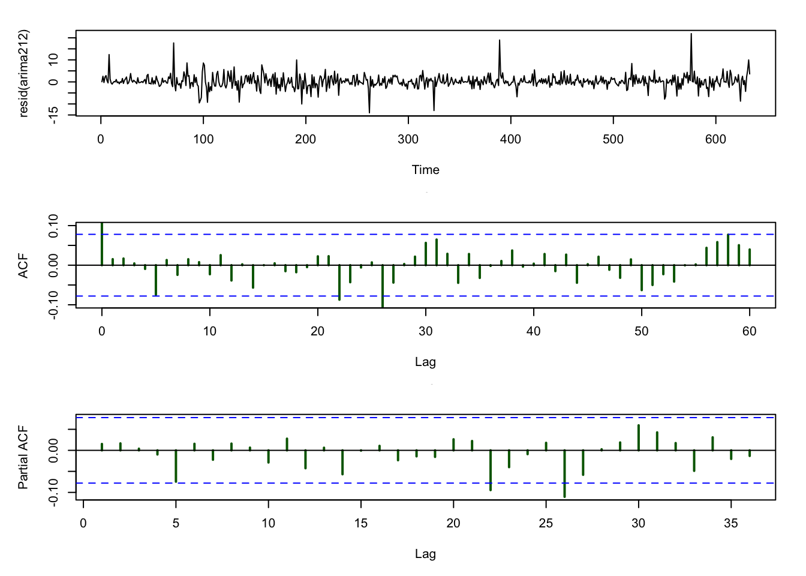
# Reset the plotting area to the default
par(mfrow = c(1, 1))The p-value in Ljung-box test is 0.9527. The very high p-value indicates that there is no evidence of autocorrelation in the residuals of this model. This means that the model residuals behave like white noise, which indicates a good model fit.
# Ljung-Box test
# The Box.test checks for the presence of autocorrelation in residuals.
Box.test(resid(arima212), type = "Ljung-Box", lag = 3)
Box-Ljung test
data: resid(arima212)
X-squared = 0.33791, df = 3, p-value = 0.9527The article then did not provide any further explanation and directly began to apply the ARIMA (1, 1, 33) and ARIMA (1, 2, 33) models.
So we also used these two models directly to be consistent with the original article.
# Fit ARIMA(1, 1, 33) model
arima1133 <- Arima(cdata.shortx1,order = c(1, 1,33))
# Coefficient test and summary
summary(arima1133)Series: cdata.shortx1
ARIMA(1,1,33)
Coefficients:
ar1 ma1 ma2 ma3 ma4 ma5 ma6 ma7
0.9915 -1.0132 -0.0013 0.0146 -0.0311 -0.0523 0.1105 -0.0370
s.e. 0.0090 0.0418 0.0570 0.0576 0.0579 0.0577 0.0575 0.0587
ma8 ma9 ma10 ma11 ma12 ma13 ma14 ma15
0.0594 -0.0218 -0.0225 0.072 -0.0762 0.0362 -0.0719 0.0730
s.e. 0.0584 0.0588 0.0591 0.060 0.0611 0.0599 0.0591 0.0587
ma16 ma17 ma18 ma19 ma20 ma21 ma22 ma23
-0.0290 -0.0459 -0.0149 0.0173 0.0284 -0.0315 -0.1223 0.0661
s.e. 0.0589 0.0575 0.0569 0.0630 0.0587 0.0658 0.0655 0.0614
ma24 ma25 ma26 ma27 ma28 ma29 ma30 ma31 ma32
0.0460 0.0067 -0.1266 0.0956 0.0369 0.0758 0.0561 0.0284 -0.023
s.e. 0.0614 0.0679 0.0641 0.0601 0.0623 0.0598 0.0593 0.0635 0.072
ma33
-0.0805
s.e. 0.0473
sigma^2 = 8.823: log likelihood = -1572.73
AIC=3215.47 AICc=3219.7 BIC=3371.18
Training set error measures:
ME RMSE MAE MPE MAPE MASE
Training set 0.118754 2.887134 1.989618 0.06502541 1.741731 1.007611
ACF1
Training set -0.002141074From the plot, we can see that ARIMA(1, 1, 33) has no significant peaks beyond the ACF and PACF limits, which means the automatic ARIMA model is more accurate.
# Set up the plotting area to have 3 rows and 1 column
par(mfrow = c(3, 1))
par(mar = c(5, 5, 2, 2)) # c(bottom, left, top, right)
# Plot residuals
plot(resid(arima1133))
# ACF and PACF of residuals
acf(resid(arima1133),lag.max = 60, main = "ACF", ylim = c(-0.1, 0.1),lwd = 2, col = "dark green",na.action = na.pass)
pacf(resid(arima1133),lag.max = 36, main = "PACF", lwd = 2, col = "dark green",na.action = na.pass)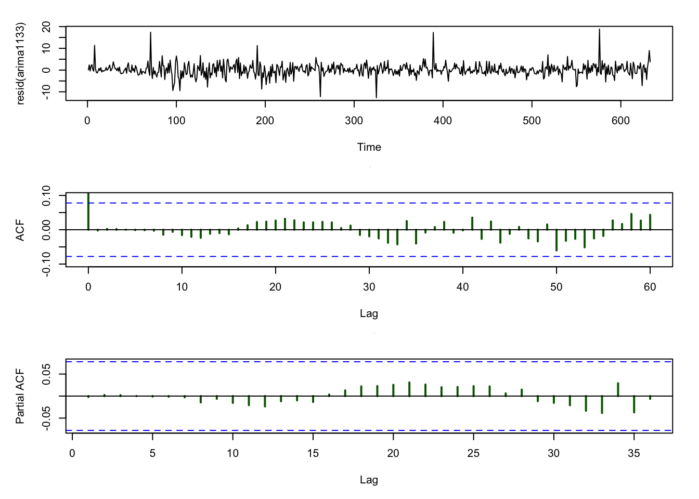
# Reset the plotting area to the default
par(mfrow = c(1, 1))The p-value in the Ljung-box test is 0.9998. The p-value is very high, which strongly indicates that the residuals of this model do not show autocorrelation. This indicates that the model has an extremely high fit. However, there is a possibility of overfitting.
# Ljung-Box test
# The Box.test checks for the presence of autocorrelation in residuals.
Box.test(resid(arima1133), type = "Ljung-Box", lag = 3)
Box-Ljung test
data: resid(arima1133)
X-squared = 0.0095174, df = 3, p-value = 0.9998# Fit ARIMA(1, 2, 33) model
arima1233 <- Arima(cdata.shortx1$Adj.Close,order = c(1, 2,33))
# Coefficient test and summary
summary(arima1233)Series: cdata.shortx1$Adj.Close
ARIMA(1,2,33)
Coefficients:
ar1 ma1 ma2 ma3 ma4 ma5 ma6 ma7
-0.6328 -0.3892 -0.6549 0.0097 -0.0130 -0.0660 0.0806 0.0307
s.e. 0.1933 0.1915 0.1981 0.0509 0.0503 0.0509 0.0508 0.0540
ma8 ma9 ma10 ma11 ma12 ma13 ma14 ma15
0.0417 0.0092 -0.0339 0.0612 -0.0336 -0.0169 -0.0439 0.0218
s.e. 0.0515 0.0535 0.0520 0.0515 0.0547 0.0540 0.0529 0.0526
ma16 ma17 ma18 ma19 ma20 ma21 ma22 ma23
0.0267 -0.0676 -0.0511 0.0165 0.0356 -0.0171 -0.1458 0.0020
s.e. 0.0539 0.0513 0.0553 0.0520 0.0523 0.0558 0.0511 0.0561
ma24 ma25 ma26 ma27 ma28 ma29 ma30 ma31 ma32
0.0858 0.0389 -0.1197 0.0174 0.1106 0.0825 0.1119 0.0661 -0.0145
s.e. 0.0546 0.0569 0.0519 0.0597 0.0582 0.0531 0.0545 0.0606 0.0480
ma33
-0.1467
s.e. 0.0435
sigma^2 = 8.784: log likelihood = -1571.98
AIC=3213.96 AICc=3218.2 BIC=3369.62
Training set error measures:
ME RMSE MAE MPE MAPE MASE
Training set -0.01026401 2.878207 2.005145 -0.07090819 1.761555 1.015475
ACF1
Training set 0.0008954079ARIMA (1,2,33) was also tested for best accuracy as it did not show significant peaks beyond the ACF and PACF limits and was not much different from the ARIMA(1,1,33) results.
# Set up the plotting area to have 3 rows and 1 column
par(mfrow = c(3, 1))
par(mar = c(5, 5, 2, 2)) # c(bottom, left, top, right)
# Plot residuals
plot(resid(arima1233))
# ACF and PACF of residuals
acf(resid(arima1233),lag.max = 60, main = "ACF", ylim = c(-0.1, 0.1), lwd = 2, col = "dark green",na.action = na.pass)
pacf(resid(arima1233),lag.max = 36, main = "PACF", lwd = 2, col = "dark green",na.action = na.pass)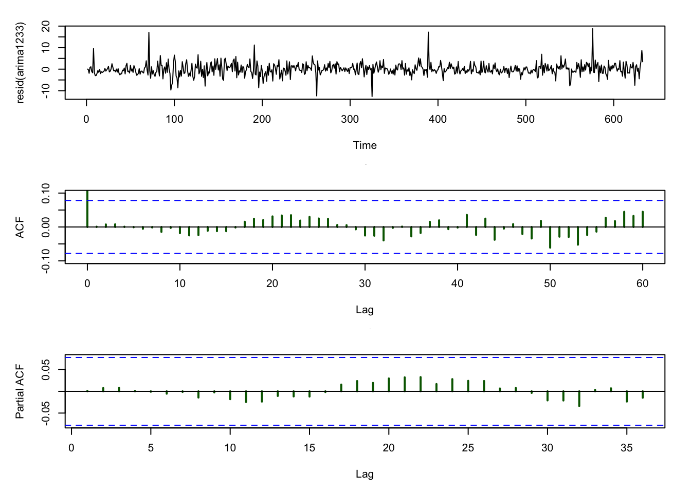
# Reset the plotting area to the default
par(mfrow = c(1, 1))The p-value in the Ljung-box test is 0.9946. Similar to the other two models, this result indicates that there is no significant autocorrelation in the residuals, but there may also be overfitting.
# Ljung-Box test
# The Box.test checks for the presence of autocorrelation in residuals.
Box.test(resid(arima1233), type = "Ljung-Box", lag = 3)
Box-Ljung test
data: resid(arima1233)
X-squared = 0.075477, df = 3, p-value = 0.9946Judging from the results of forecasts accuracy, although the model performs well in the train set, it has a large error in the test set.
# Generate ARIMA(2,1,2) forecasts, 627 future values(50% of data) are forecasted.
forecasts212 <- forecast(arima212, h = 627)
# Generate ARIMA(2,1,2) forecasts accuracy
accuracy(forecasts212, Adj.Close["20171007/", ]) ME RMSE MAE MPE MAPE MASE
Training set 0.2331183 3.033594 1.969616 0.1635537 1.720336 0.9974815
Test set 119.0435423 131.507419 119.826959 35.2654273 35.680439 60.6845140
ACF1
Training set 0.01518222
Test set NAForecast data processing
# Extract forecasted mean
forecasts212
forecasts212$mean
# Check class and convert to numeric
class(forecasts212$mean)
as.numeric(forecasts212$mean)
# Extract forecast confidence intervals
forecasts212$lower
forecasts212$upper
# Create data frame for forecast data
forecasts212_data <- data.frame(f_mean = as.numeric(forecasts212$mean),
f_lower = as.numeric(forecasts212$lower[, 2]),
f_upper = as.numeric(forecasts212$upper[, 2]))Splitting the dataset
# Subset data up to a specific date
cdata.shortx1 <- Adj.Close["/20171007", ]
# Check the head and tail of the subset data
head(cdata.shortx1) Adj.Close
2015-04-07 60.49429
2015-04-08 63.05000
2015-04-09 62.78571
2015-04-10 64.93857
2015-04-13 67.81143
2015-04-14 68.38715tail(cdata.shortx1) Adj.Close
2017-09-29 181.35
2017-10-02 177.01
2017-10-03 179.19
2017-10-04 184.45
2017-10-05 194.39
2017-10-06 198.02# Subset data from a specific date
cdata.shortx2 <-Adj.Close["20171007/", ]
# Convert forecast data to xts object
forecasts212_xts <- xts(forecasts212_data,order.by =index(cdata.shortx2))Plot ARIMA(2,1,2) forecasts
From the figure we can see that the predicted results are very biased, but this is also consistent with the description of the model in the article.
# Convert forecast data to xts object
forecasts212_xts <- xts(forecasts212_data,order.by =index(cdata.shortx2))
# Merge original data with forecast data
cdata212 <- merge(Adj.Close,forecasts212_xts)
# Display the merged data
head(cdata212) Adj.Close f_mean f_lower f_upper
2015-04-07 60.49429 NA NA NA
2015-04-08 63.05000 NA NA NA
2015-04-09 62.78571 NA NA NA
2015-04-10 64.93857 NA NA NA
2015-04-13 67.81143 NA NA NA
2015-04-14 68.38715 NA NA NAtail(cdata212, n =627) Adj.Close f_mean f_lower f_upper
2017-10-09 196.87 197.9193 191.94998 203.8887
2017-10-10 195.08 197.8871 189.42621 206.3480
2017-10-11 194.95 197.7978 187.45989 208.1356
2017-10-12 195.86 197.7636 185.83106 209.6961
2017-10-13 199.49 197.6838 184.36700 211.0007
2017-10-16 202.68 197.6486 183.07299 212.2242
2017-10-17 199.48 197.5771 181.85809 213.2962
2017-10-18 195.54 197.5416 180.75380 214.3295
2017-10-19 195.13 197.4773 179.69596 215.2586
2017-10-20 194.16 197.4420 178.71823 216.1658
...
2020-03-24 357.32 196.0605 59.12061 333.0004
2020-03-25 342.39 196.0605 59.01085 333.1102
2020-03-26 362.99 196.0605 58.90119 333.2198
2020-03-27 357.12 196.0605 58.79161 333.3294
2020-03-30 370.96 196.0605 58.68212 333.4389
2020-03-31 375.50 196.0605 58.57272 333.5483
2020-04-01 364.08 196.0605 58.46340 333.6576
2020-04-02 370.08 196.0605 58.35417 333.7668
2020-04-03 361.76 196.0605 58.24503 333.8760
2020-04-06 379.96 196.0605 58.13597 333.9850# Plot the merged data
plot(cdata212, main = "Forecasts from ARIMA(2,1,2)", col = c("black", "blue", "red", "green"))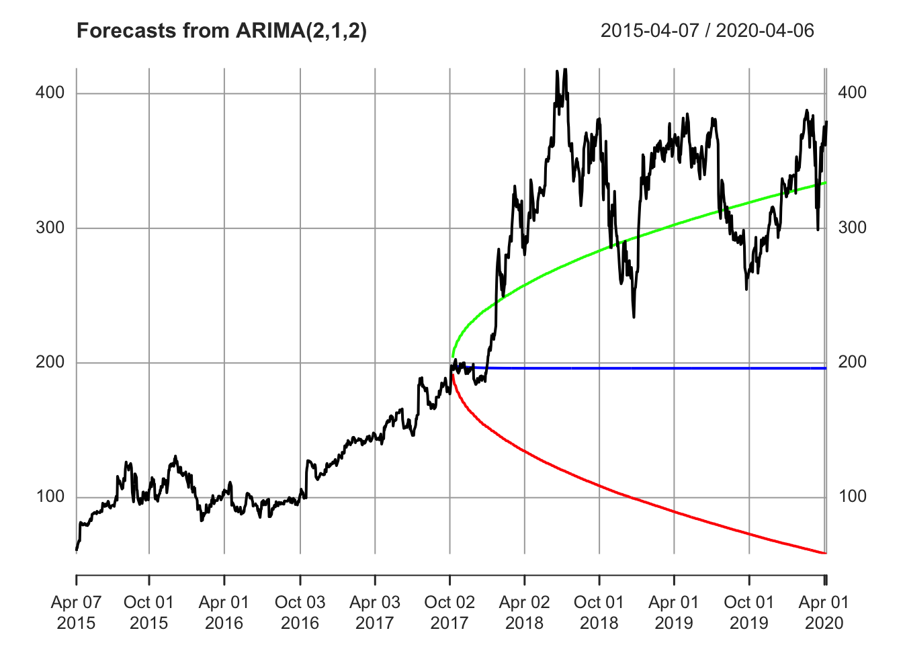
The results also show that there is a large error between the train set and the test set, but it is better than ARIMA (2, 1, 2).
# Generate ARIMA(1,1,33) forecasts,627 future values are forecasted.
forecasts1133 <- forecast(arima1133, h = 627)
# Generate ARIMA(1,1,33) forecasts accuracy
accuracy(forecasts1133, Adj.Close["20171007/", ]) ME RMSE MAE MPE MAPE MASE
Training set 0.118754 2.887134 1.989618 0.06502541 1.741731 1.007611
Test set 51.208585 66.701909 55.927660 14.23134418 16.463762 28.323700
ACF1
Training set -0.002141074
Test set NAForecast data processing
# Extract forecasted mean
forecasts1133$mean
# Check class and convert to numeric
class(forecasts1133$mean)
as.numeric(forecasts1133$mean)
# Extract forecast confidence intervals
forecasts1133$lower
forecasts1133$upper
# Create data frame for forecast data
forecasts1133_data <- data.frame(f_mean = as.numeric(forecasts1133$mean),
f_lower = as.numeric(forecasts1133$lower[, 2]),
f_upper = as.numeric(forecasts1133$upper[, 2]))From the figure we can see that the prediction results are obviously more accurate than before.
# Convert forecast data to xts object
forecasts1133_xts <- xts(forecasts1133_data,order.by =index(cdata.shortx2))
# Merge original data with forecast data
cdata1133 <- merge(Adj.Close,forecasts1133_xts)
# Display the merged data
head(cdata1133) Adj.Close f_mean f_lower f_upper
2015-04-07 60.49429 NA NA NA
2015-04-08 63.05000 NA NA NA
2015-04-09 62.78571 NA NA NA
2015-04-10 64.93857 NA NA NA
2015-04-13 67.81143 NA NA NA
2015-04-14 68.38715 NA NA NAtail(cdata1133, n =627) Adj.Close f_mean f_lower f_upper
2017-10-09 196.87 199.0006 193.16978 204.8314
2017-10-10 195.08 199.4739 191.30518 207.6427
2017-10-11 194.95 199.7460 189.84063 209.6514
2017-10-12 195.86 198.7573 187.39485 210.1197
2017-10-13 199.49 199.4647 186.90768 212.0218
2017-10-16 202.68 200.4825 187.03349 213.9314
2017-10-17 199.48 200.3289 186.00505 214.6528
2017-10-18 195.54 200.8130 185.69916 215.9269
2017-10-19 195.13 201.2593 185.32133 217.1972
2017-10-20 194.16 202.4778 185.72433 219.2313
...
2020-03-24 357.32 281.6241 -31.96276 595.2110
2020-03-25 342.39 281.6284 -32.31211 595.5689
2020-03-26 362.99 281.6326 -32.66114 595.9264
2020-03-27 357.12 281.6368 -33.00984 596.2835
2020-03-30 370.96 281.6410 -33.35821 596.6402
2020-03-31 375.50 281.6451 -33.70625 596.9965
2020-04-01 364.08 281.6492 -34.05397 597.3524
2020-04-02 370.08 281.6532 -34.40136 597.7079
2020-04-03 361.76 281.6573 -34.74842 598.0630
2020-04-06 379.96 281.6613 -35.09516 598.4177# Plot the merged data
plot(cdata1133, main = "Forecasts from ARIMA(1,1,33)", col = c("black", "blue", "red", "green"))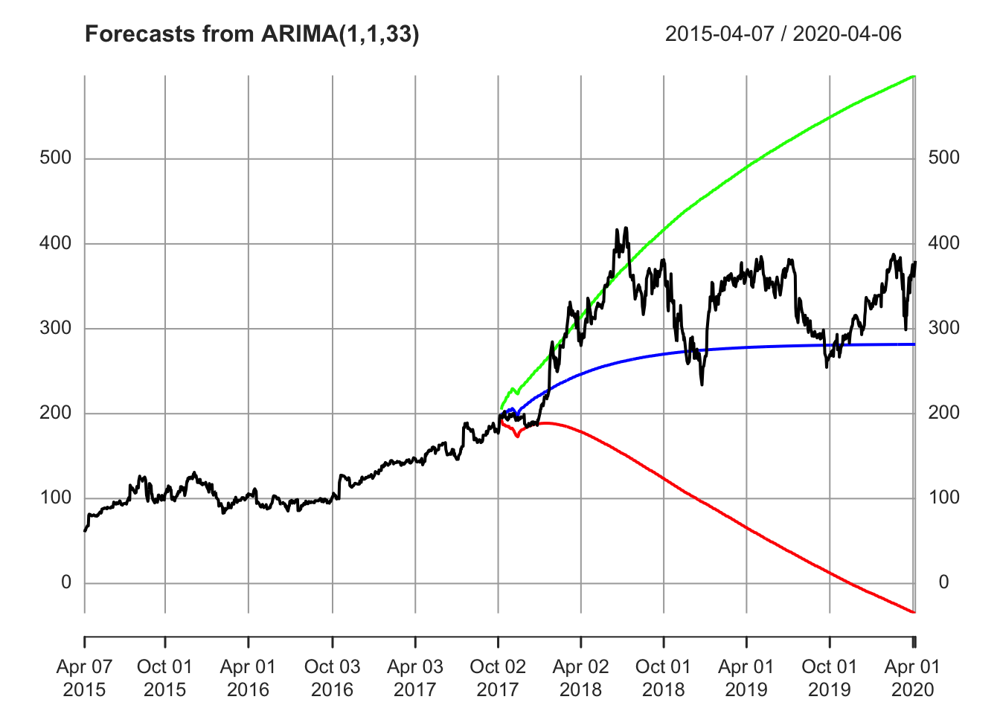
The results here show that the errors for both the train set and test set have increased again.
# Generate ARIMA(1,2,33) forecasts,627 future values are forecasted.
forecasts1233 <- forecast(arima1233, h = 627)
# Generate ARIMA(1,2,33) forecasts accuracy
accuracy(forecasts1233, Adj.Close["20171007/", ]) ME RMSE MAE MPE MAPE
Training set -0.01026401 2.878207 2.005145 -0.07090819 1.761555
Test set -157.75418343 216.382343 165.547546 -49.88776548 52.089527
MASE ACF1
Training set 1.015475 0.0008954079
Test set 83.839000 NAForecast data processing
# Extract forecasted mean
forecasts1233$mean
# Check class and convert to numeric
class(forecasts1233$mean)
as.numeric(forecasts1233$mean)
# Extract forecast confidence intervals
forecasts1233$lower
forecasts1233$upper
# Create data frame for forecast data
forecasts1233_data <- data.frame(f_mean = as.numeric(forecasts1233$mean),
f_lower = as.numeric(forecasts1233$lower[, 2]),
f_upper = as.numeric(forecasts1233$upper[, 2]))From the figure we can see that the prediction results are obviously too high.
# Convert forecast data to xts object
forecasts1233_xts <- xts(forecasts1233_data,order.by =index(cdata.shortx2))
# Merge original data with forecast data
cdata1233 <- merge(Adj.Close,forecasts1233_xts)
# Display the merged data
head(cdata1233) Adj.Close f_mean f_lower f_upper
2015-04-07 60.49429 NA NA NA
2015-04-08 63.05000 NA NA NA
2015-04-09 62.78571 NA NA NA
2015-04-10 64.93857 NA NA NA
2015-04-13 67.81143 NA NA NA
2015-04-14 68.38715 NA NA NAtail(cdata1233, n =627) Adj.Close f_mean f_lower f_upper
2017-10-09 196.87 199.1558 193.3331 204.9785
2017-10-10 195.08 199.7574 191.5938 207.9211
2017-10-11 194.95 200.2867 190.4035 210.1700
2017-10-12 195.86 199.7047 188.3929 211.0164
2017-10-13 199.49 200.8192 188.3278 213.3106
2017-10-16 202.68 202.2992 188.9214 215.6770
2017-10-17 199.48 202.1623 187.9045 216.4201
2017-10-18 195.54 203.1059 188.0517 218.1602
2017-10-19 195.13 204.0432 188.1416 219.9449
2017-10-20 194.16 205.6828 188.9480 222.4175
...
2020-03-24 357.32 749.8516 -331.9562 1831.6595
2020-03-25 342.39 750.7635 -333.6996 1835.2267
2020-03-26 362.99 751.6754 -335.4452 1838.7961
2020-03-27 357.12 752.5873 -337.1929 1842.3676
2020-03-30 370.96 753.4992 -338.9429 1845.9413
2020-03-31 375.50 754.4111 -340.6950 1849.5172
2020-04-01 364.08 755.3230 -342.4492 1853.0953
2020-04-02 370.08 756.2349 -344.2056 1856.6755
2020-04-03 361.76 757.1468 -345.9642 1860.2579
2020-04-06 379.96 758.0587 -347.7249 1863.8424# Plot the merged data
plot(cdata1233, main = "Forecasts from ARIMA(1,2,33)", col = c("black", "blue", "red", "green"))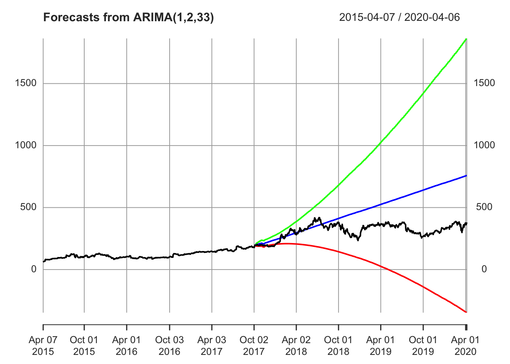
From the comparison chart, we can see that compared with the other two models, the prediction results of ARIMA (1, 1, 33) are more accurate.
par(mfrow = c(3, 1))
par(mar = c(5, 5, 2, 2))
plot(cdata212, main = "Forecasts from ARIMA(2,1,2)", col = c("black", "blue", "red", "green"))
plot(cdata1133, main = "Forecasts from ARIMA(1,1,33)", col = c("black", "blue", "red", "green"))
plot(cdata1233, main = "Forecasts from ARIMA(1,2,33)", col = c("black", "blue", "red", "green"))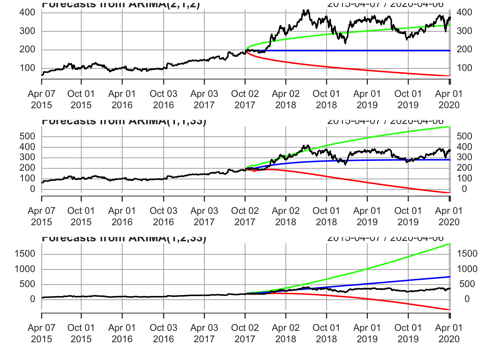
# Reset the plotting area to the default
par(mfrow = c(1, 1))This can be seen more clearly from the comparison of forecasts accuracy.
# Compare 3 ARIMA model accuracy
# Generate ARIMA(2,1,2) forecasts accuracy
accuracy(forecasts212, Adj.Close["20171007/", ]) ME RMSE MAE MPE MAPE MASE
Training set 0.2331183 3.033594 1.969616 0.1635537 1.720336 0.9974815
Test set 119.0435423 131.507419 119.826959 35.2654273 35.680439 60.6845140
ACF1
Training set 0.01518222
Test set NA# Generate ARIMA(1,1,33) forecasts accuracy
accuracy(forecasts1133, Adj.Close["20171007/", ]) ME RMSE MAE MPE MAPE MASE
Training set 0.118754 2.887134 1.989618 0.06502541 1.741731 1.007611
Test set 51.208585 66.701909 55.927660 14.23134418 16.463762 28.323700
ACF1
Training set -0.002141074
Test set NA# Generate ARIMA(1,2,33) forecasts accuracy
accuracy(forecasts1233, Adj.Close["20171007/", ]) ME RMSE MAE MPE MAPE
Training set -0.01026401 2.878207 2.005145 -0.07090819 1.761555
Test set -157.75418343 216.382343 165.547546 -49.88776548 52.089527
MASE ACF1
Training set 1.015475 0.0008954079
Test set 83.839000 NAThis study uses Netflix stock historical data for the past five years (April 7, 2015 to April 7, 2020) to compare the results of the automatic ARIMA model and two custom ARIMA models.
After multiple tests, the calculated values of ARIMA (1,1,33) show accurate results, which indicates that using ARIMA models on time series data can accurately predict stock data, which will help stock investors make investment decisions. The ARIMA (1,1,33) forecast for Netflix stock shows continuity of value.
First of all, we do not discuss whether the conclusions in the article are correct. Our focus is on whether the research can be reproduced.
There are still some details that cannot be reproduced 100%. For example, the automatic ARIMA model we obtained is (2, 1, 2), while the automatic ARIMA model obtained in the article is (4, 1, 4).
We think the reasons for non-reproducibility are:
Despite this, we have completely replicated all the operations in the article, and the results obtained are consistent with those in the article.